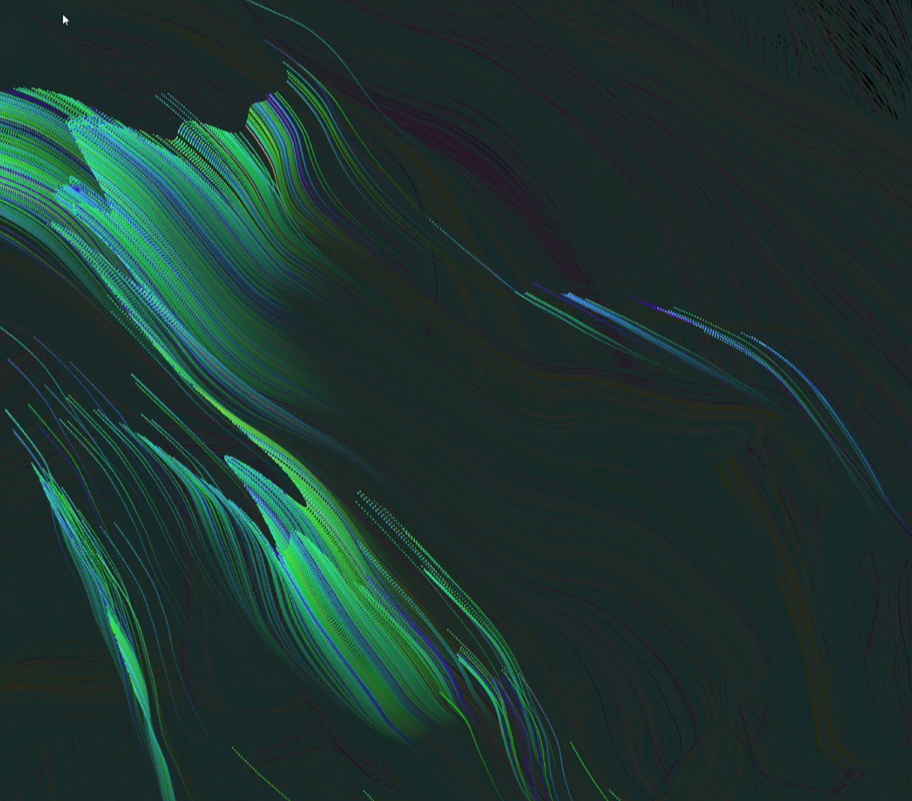

Description for LAB 1
This project is an undersea coral colony simulation scenario with interactivity. Through the use of code, I simulated the growth and movement of a coral colony under the sea. On the canvas, I represented the coral with a series of brightly coloured circular particles that are constantly changing colour depending on the noise generated. The particles floated on the canvas, and a move vector moveVector was calculated based on the position of the mouse, representing the effect of the mouse on the movement of the particles. The position of each particle is then fine-tuned according to the noise and the effect of the mouse position is added. In this way, the coral colony changes dynamically as the mouse moves, making the whole scene more vivid and interactive. This project shows a part of the undersea ecology and the life activities of tiny creatures in nature, in an interactive way that allows the viewer to connect with the undersea world.

Description for LAB 2
I attempted to make a flock of birds fly freely across the canvas by creating a group of "boids" (birds) that move across the canvas to simulate the group behaviour of a flock of birds. Each bird has position, velocity and acceleration attributes and adjusts its direction of movement according to the position and velocity of the other birds around it, allowing for separation, cohesion and alignment within the group. By adjusting the values of the sliders, the forces of separation, cohesion and alignment can be altered, thus affecting the movement patterns of the entire group.
The Boid class in the code is responsible for representing each bird, including its position, velocity, acceleration, and other attributes, as well as corresponding methods for updating the state and drawing. setup() function initialises the canvas and creates a certain number of birds and initialises the sliders. draw() function updates and draws the state of the entire flock of birds in each frame.
Each bird has its own trajectory and direction, yet they interact with the others to form a harmonious overall movement. This image reminds me of group behaviour in human society, where each individual pursues their own goals but is inevitably affected by the surrounding environment and other people.
Description for LAB 3
This project simulates a scene of a blessing fire through code. However, a virtual flame gradually burns away these blessings until they disappear completely. The movement of the flames was controlled by code, with each frame moving towards the text area at a random position and angle.
I used a for loop to draw multiple lines of "Blessing You" text in a graphics buffer created by the createGraphics() function, with each line appearing in a particular arrangement, and then I used the filter() function to apply a THRESHOLD function to the canvas image. Then I used the filter() function to apply a THRESHOLD filter effect to the image in the canvas, giving it a visual effect of burning flames.
Finally, I used the loadPixels() and updatePixels() functions, which processed the pixel data of the image, allowing the flame effect to gradually burn the text, giving it a mysterious and ritualistic effect.